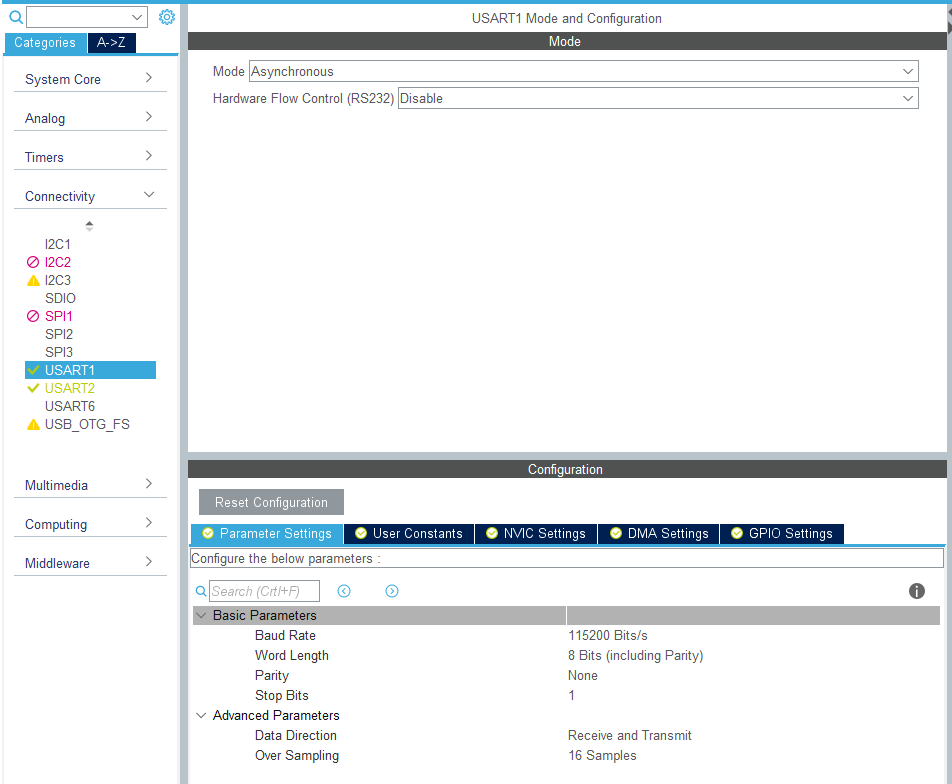

Wojciech Olech
USART to skrót od Universal Synchronous Asynchronous Receiver Transmitter.
Jest to jedna z najprostszych popularnie używanych magistrali komunikacyjnych.
Asynchroniczny USART komunikuje się typowo za pomocą dwóch linii (w trybie duplex, jest możliwe używanie jednej w simplexie lub half-duplexie), RX (Receive) i TX (Transmit). Urządzenia są połączone z przeplotem, tj. RX jednego urządzenia powinien być połączony do TXa drugiego i vice-versa.
W trybie synchronicznym dodatkowo są używane linie komunikujące o gotowości RX i TX.
W tej prezentacji przedstawię tylko asynchronicznego USARTa (dalej nazywanego UARTem).
UART przesyła dane w ramkach. Kiedy linia jest wolna (nieużywana), jest podciągnięta do stanu wysokiego. W momencie rozpoczęcia transmisji linia zmienia stan na niski, a następnie wysyłane są bity danych, oraz opcjonalnie bit parzystości.
Na koniec pojawia się tzw. stop bit oznaczający koniec ramki i linia przechodzi w stan wolny lub następuje transmisja kolejnej ramki.
Możemy skonfigurować następujące parametry UARTa:
Domyślne ustawienia dla STM32CubeMXa to baud 115200, 8 bitów w ramce, brak bitu parzystości i stop bit o długości 1 bita. Takich ustawień używa w tej chwili większość urządzeń (trafiają się jeszcze urządzenia z baudem 9600).
Obie strony muszą mieć dokładnie takie same ustawienia UARTa, inaczej nie będą w stanie się komunikować.
Do komunikowania się z komputerem, potrzebujemy konwertera Serial <-> USB.
Płytki Nucleo posiadają konwerter (programator daje funkcjonalność wirtualnego portu COM) i jeśli przy tworzeniu projektu wybierzemy opcję domyślnej inicjalizacji peryferiów, to dostępny przez programator USART zostanie automatycznie skonfigurowany.
Jeśli korzystasz z płytki bez wbudowanego konwertera, polecam zaopatrzyć się w FT232RL lub w ostateczności CH340.
Port serialowy można otworzyć programem typu Putty, Realterm, lub wbudowanym monitorem Atollica (dostępnym z widoku debugowania)
Żeby uruchomić magistralę UART, wchodzimy w zakładkę "Connectivity" i wybieramy jeden z dostępnych USARTów. Następnie wybieramy tryb "Asynchronous" i konfigurujemy ustawienia magistrali. Po skonfigurowaniu reszty peryferiów i projektu, możemy go wygenerować.
Kod inicjalizacji UARTa znajduje się w pliku usart.c (lub main.c, jeśli nie zaznaczyliśmy w ustawieniach projektu opcji generowania osobnych par plików dla każdego peryferium). Znajduje się tam również uchwyt do niego (który jest eksportowany w pliku usart.h z modyfikatorem extern do używania w reszcie kodu, lub main.h). CubeMX generuje zarówno kod inicjalizacji UARTa jak i kod inicjalizacji pinów GPIO które są wykorzystywane do komunikacji.
Do inicjalizacji UARTa używana jest funkcja HAL_UART_Init(UART_HandleTypeDef* handle), która przyjmuje wskaźnik na strukturę-uchwyt do UARTa.
Dodatkowy kod inicjalizacji GPIO UARTa znajduje się w usart.c lub stm32f4xx_hal_msp.c, w funkcji HAL_UART_MspInit która jest automatycznie wywoływana przez HAL przy inicjalizacji UARTa.
UART (tak jak większość peryferiów) ma trzy tryby działania
Tutaj zaprezentuję używanie seriala w trybie blokującym, ponieważ jest najprostszy.
Używanie seriala w trybie przerwań i DMA zaprezentuję w następnych rozdziałach kursu.
Do wysłania ciągu bajtów poprzez serial służy funkcja HAL_UART_Transmit(UART_HandleTypeDef* handle, uint8_t* data, uint16_t size, uint32_t timeout)
Funkcja ta przyjmuje uchwyt do seriala, wskaźnik na dane, ich wielkość oraz maksymalny czas czekania na wysłanie danych (w milisekundach). Zwraca status wykonania (enumerację HAL_StatusTypeDef).
Przykład:
char const* message = "Hello, world!\r\n"; // \r jest potrzebne żeby poprawnie wyświetliła się kolejna linia HAL_UART_Transmit(&huart1, (uint8_t*)message, (uint16_t)strlen(message), HAL_MAX_DELAY);
Zadanie 1: Napisać program który wysyła dowolny tekst (zakończony \r\n) po naciśnięciu przycisku na płytce
Można również przekierować printf tak żeby korzystał z UARTa, w taki sam sposób w jaki zrobiliśmy to z ITMem.
int __io_putchar(int ch) { if (ch == '\n') { __io_putchar('\r'); } HAL_UART_Transmit(&huart2, (uint8_t*)&ch, 1, HAL_MAX_DELAY); return ch; }
Zadanie 2: Zmienić poprzedni program tak, żeby korzystał z printf'a i wysyłał czas od uruchomienia procesora (zakończony znakiem nowej linii) po wciśnięciu przycisku. Użyć funkcji HAL_GetTick() do sprawdzenia ilości czasu od uruchomienia procesora.
Analogicznie, do odbierania danych służy funkcja HAL_UART_Receive(UART_HandleTypeDef* handle, uint8_t* buffer, uint16_t length, uint32_t timeout)
Ważne jest, że ta funkcja (tak samo jak Transmit) czeka na odebranie tylu bajtów, ile podaliśmy poprzez argument length. Oznacza to, że jeśli użyjemy tej funkcji w następujący sposób:
char buf[64] = {0}; HAL_UART_Receive(&huart1, (uint8_t*)buf, 64, 10000);
to program będzie czekał aż dostanie 64 bajty, albo po 10 sekundach zakończy wykonywanie funkcji.
Zadanie 3: Napisać program który będzie w nieskończonej pętli odbierał jeden znak i odsyłał go do komputera (echo server)
Żeby odebrać dowolną ilość danych, na przykład do momentu napotkania pewnego znaku który będzie nam kończył komunikat (na przykład znaku nowej linii), możemy
a) Używając funkcji HAL_UART_Receive czytać bajt po bajcie i sprawdzać czy jest to terminator - słabe rozwiązanie, wolne, łatwo w ten sposób gubić bajty przy dużym obciążeniu procesora
b) Stworzyć kopię funkcji HAL_UART_Receive która czyta bajt po bajcie i zwraca komunikat po osiągnięciu timeoutu lub napotkaniu terminatora - nieco lepsze rozwiązanie niż a), ale nadal nie jest optymalne
c) Użyć przerwań (a.k.a zaimplementować a) używając przerwań, również nieoptymalne, tak samo obciąża procesor jak b) i a))
d) Użyć DMA i przerwania idle line (najlepsze, ale zaawansowane)
Opiszę tutaj tylko metodę a), ale w rozdziale o DMA pokażę jak zrobić to w taki sposób żeby nie obciążać procesora ani nie gubić żadnych bajtów.
size_t readSerialUntil(UART_HandleTypeDef* uart, char* buffer, size_t max_size, char terminator, uint32_t timeout) { size_t bytes_read = 0; uint8_t byte = 0x00; while (HAL_UART_Receive(uart, &byte, 1, timeout) == HAL_OK) { *(buffer + bytes_read) = byte; bytes_read++; if (byte == terminator) { break; } } return bytes_read; }
Przykład użycia:
char message_buffer[128] = { 0 }; // Terminator może być \r albo \n dla nowej linii, zależy czego oczekujemy i w jaki sposób wysyłamy tekst if (readSerialUntil(&huart2, message_buffer, 128, '\r', 1000) > 0) { printf("Received message: %s\n", message_buffer); }
Zadanie 4: Napisać program który po odebraniu wiadomości zakończonej znakiem nowej linii, odeśle ją do komputera z czasem uruchomienia procesora w formacie [Czas]: Wiadomość
Opis USARTa dla STM32F7 (dla mniej rozbudowanych mikrokontrolerów USART może nie mieć pewnych funkcjonalności opisanych w tym PDFie)
https://www.st.com/content/ccc/resource/training/technical/product_training/group0/b8/a3/a6/7c/23/8c/4e/e0/STM32F7_Peripheral_USART/files/STM32F7_Peripheral_USART.pdf/jcr:content/translations/en.STM32F7_Peripheral_USART.pdf